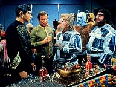
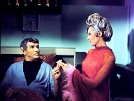
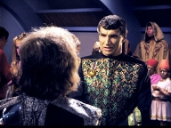
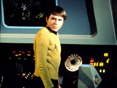
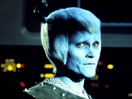
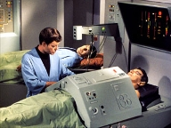

|
MANCHETE
DO EPISDIO
Episdio desenvolve Spock e apresenta elementos da poltica
da Federao
Episdio
anterior | Prximo episdio Sinopse:
Data Estelar:
3842.3.
A USS Enterprise incumbida
de transportar vrios embaixadores de diferentes raas aliengenas para uma conferncia
que iria determinar a admisso de Coridian, um sistema estelar, na Federao.
Coridian possui um suprimento quase ilimitado de cristais de diltio, mas a pequena
populao e a falta de governo permitiram que operaes ilegais de minerao por
estrangeiros interessados apenas em explorar seus recursos naturais ocorressem.
Sarek o embaixador
de Vulcano, e est acompanhado pela sua esposa Amanda que humana e que para
surpresa de Kirk e McCoy, so os pais de Spock. Tambm para surpresa de Kirk,
Sarek mostra-se extremamente frio e distante de Spock, aparentemente por que Spock
escolheu devotar sua vida Frota Estelar em vez da Academia de Vulcano.  A
conferncia ter lugar num planeta neutro, com nome de cdigo Babel. McCoy questiona
Amanda sobre Spock e descobre que, enquanto criana, ele teve um animal de estimao,
mas este bichinho tinha quase 2 metros de altura e garras afiadas. Enquanto
isso, Uhura detecta uma transmisso no identificada vinda de dentro da Enterprise,
e subsequentemente, Chekov detecta uma pequena nave de origem desconhecida em
curso paralelo ao da nave, exatamente fora do alcance dos phasers e em velocidade
de Dobra 10.
O
Tenente Joseph relata que o embaixador Telarita Gav foi encontrado assassinado.
McCoy conclui que a morte foi instantnea, causada pela quebra do pescoo da vtima
por algum expert na arte de matar. Spock explica que os Vulcanos possuem mtodo
semelhante de terminar com a vida, chamado de Tal-Shaya, fazendo com que Sarek
seja um suspeito da morte do Telarita, j que havia se envolvido numa altercao
com ele, aps acusar seu povo de serem contrabandistas de Coridian. No entanto,
quando Kirk comea a questionar o embaixador Vulcano, Sarek sofre um ataque cardiaco
e explica que, no momento em que Gav fora morto, ele tivera outro ataque que o
impossibilitaria de ter cometido qualquer crime.  Enquanto
isso, Spock detecta emisses de tritanio do casco de uma nave aliengena depois
dela transmitir uma mensagem. Uhura determina que a mensagem foi recebida em algum
lugar bordo da Enterprise. No entanto, Spock no capaz de decodificar o fragmento
da mensagem que Uhura interceptou.
Sarek revela que teve trs ataques cardacos
previamente e que vinha tomando Bengacidrina para combater o problema. Ele necessitava
de uma cirurgia de corao aberto, mas a Enterprise no possuia depsitos de sangue
suficientes para a realizao da cirurgia, principalmente por causa do tipo sanguneo
raro do embaixador, tipo T negativo. Apesar do fato de que o sangue de Spock era
uma mistura de fatores humanos e Vulcanos, ele se dispe a doar seu sangue para
uma transfuso para Sarek, aps McCoy usar um estimulante experimental para aumentar
a taxa de produo de sangue.
Thelev,
um membro da equipe do embaixador Andoriano luta com Kirk e acaba por esfaque-lo.
O Capito requer cuidados mdicos, ento Spock tem que assumir o comando da Enterprise.
Nestas circunstncias, ele relata que no poder mais realizar a transfuso para
Sarek e no poder passar o comando da nave para mais ningum por que ele era
a pessoa mais qualificada para o comando sob aquelas circunstncias. Amanda, sua
me implora para que ele mude de idia, mas Spock se recusa. Finalmente,
Kirk finge estar totalmente curado de seus ferimentos com a aprovao relutante
de McCoy e retoma o controle da Enterprise, ordenando que Spock se apresentasse
enfermaria. Uhura detecta outra transmisso originaria da Enterprise, e desta
vez consegue triangular o sinal, descobrindo que ele se originava da cela onde
o Andoriano estava preso. Uma busca da segurana revelou um transmissor escondido
em uma de suas antenas, que mostrou-se falsa.  A
Enterprise atacada pela nave aliengena que a rondava, enquanto Sarek e Spock
estavam na mesa de cirurgia, fazendo com que suas vidas ficassem em perigo. A
nave se move muito rpido, fazendo com que a Enterprise no consiga ating-la,
enquanto o inimigo consegue atirar contra a nave de Kirk inmeras vezes, fazendo
com que ela perdesse um de seus escudos. Kirk ento, engana seus inimigos desligando
os escudos e boa parte da energia da Enterprise, fazendo com que seus atacantes
acreditem que a nave est deriva e impotente. Quando a nave aliengena parte
para o suposto ataque final, Kirk atinge-os com os Phasers e desabilita-os. No
entanto, antes de propor sua rendio, os inimigos se auto-destroem.
O
prisioneiro Andoriano, junto com seus comparsas, aparentemente tentava semear
a discrdia e a desconfiana entre os membros da Federao, mas acabou por se
matar aps auto-administrar uma dose de veneno, logo aps seus colegas na nave
aliengena terem se auto-destrudo. No entanto, Spock, que estava se recuperando
da cirurgia, conclui que os perpetradores eram de Orion, j que os Orianos eram
conhecidos contrabandistas de diltio de Coridian e, portanto, estavam ansiosos
para prevenir a interferncia em seus esquemas. McCoy confina os convalescentes
Kirk e Spock na enfermaria, inclusive ordenando que ambos fiquem calados.
Comentrios: Jorney
to Babel o episodio mais complexo e mais importante da segunda temporada
da Srie Clssica, pois lida com vrios
de seus elementos mais fundamentais. A descoberta da relao conturbada de Spock
com seu pai e a revelao de um pouco do cenrio poltico da Federao num ambiente
cercado de mistrio, graas ao assassinato do embaixador Telarita, com direito
a USS Enterprise sendo perseguida por uma nave desconhecida, convergem para uma
realizao de grande importncia para dar personalidade a srie.
Temos
algumas afluentes que desguam na mesmo rio (ou seria o contrario !?), mas o eixo
principal sobre qual gira o roteiro relao de Spock com seu pai, Sarek, por
isto tratemos disto, primeiramente.
Ao longo da existncia da Srie
Clssica, alguns episdios foram veculos importantes para que Leonard
Nimoy pudesse adicionar tijolos a construo de seu personagem .
The Naked Time, The Menagerie, The Galileo Seven, da primeira temporada,
e nesta segundo ano de vida, o clssico Amok
Time. Todos acrescentaram elementos que nos ajudariam a entender a forma
de pensar e agir de Spock, mas ainda havia uma questo importante? O que o motiva
?
Esta questo parece ser em parte respondida em Jorney
to Babel, que vem acrescentar ao personagem um importante Background, ao
apresentar sua famlia a audincia. Esta apresentao claro, feita em grande
estilo. Descobrimos aqui que o pai do primeiro oficial da Enterprise um importante
representante de um dos mais importantes planetas da Federao, Sarek, De Vulcano.
Alm claro, de dar um toque de continuidade aos eventos de
Amok Time, quando McCoy ficou surpreso pelo fato de TPau, uma pessoa
de extrema importncia em seu planeta, estar presidindo a cerimnia de casamento
de Spock, tal revelao acrescenta enorme importncia a escolha de Spock em se
dedicar a uma carreira na Frota Estelar.

No bastasse Spock ter abandonado um futuro promissor, sendo herdeiro de um nome
importante em seu planeta de origem, a desaprovao desta escolha por seu pai
torna a dimenso desta ainda mais importante. Qual a lgica por trs dela ? Acredito
que esta resposta se tornou clara para os fs ao longo dos anos, mas a primeira
pista da charada pode ser encontrada nas palavras de sua me, Amanda, quando ela
est conversando com Kirk, aps a gafe do capito na engenharia.
It
hasn't been easy on Spock. Neither human nor Vulcan. At home nowhere ...
except
Starfleet.
A lgica sugere que a principal motivao por trs
da escolha de Spock seria a de procurar seu prprio caminho, conquistando por
merecimento seu espao. Podemos especular que, devido a sua herana mestia, Spock
sofreria preconceitos entre os Vulcanos puros, e estes certamente questionariam
os seus mritos, uma vez que certamente herdaria o nome do pai, mas no o respeito
deste. Pena que Gene Roddenberry no quisesse
conceder a Serie Animada s benes da
canonicidade, pois o episodio Yesteryear
um elemento riqussimo nesta abordagem das motivaes do personagem.
Ainda no terreno da especulao, fica aparente que Spock em algum momento
decidiu pela Frota Estelar como forma de buscar esta independncia, e talvez seja
este o verdadeiro motivo da desaprovao de Sarek, que deixa claro, com todas
as letras, que esperava que seu filho seguisse seus passos, em Vulcano. Se a ida
de Spock para a Frota Estelar representava a sua libertao e a sua busca por
uma identidade prpria, para seu pai representava um ato de rebeldia. Tpica relao
entre o filho adolescente e pai que no consegue ver mritos nas escolhas deste
filho.
Dezoito anos depois, as motivaes continuam, mas se no sabemos
como era a relao de pai e filho quando estes discordaram de forma to intensa,
fcil observamos um avano na forma como cada parte considera o problema. Spock
est visivelmente desconfortvel com a situao, e deixa claro, a todo momento
que est aberto a reiniciar a relao com Sarek, embora este parea irredutvel.
Mas Sarek, como bem diagnosticou sua esposa, Amanda, nutre um orgulho quase humano
pelas realizaes do filho, embora no queira admiti-lo. Um impasse.
Notem que a brincadeira do Ursinho de Pelcia (teddy bear), que no poderia
ter acontecido sem a provocao de nenhum outro seno McCoy, no acontece por
acaso. Alm de nos divertir, como sempre, fornece a oportunidade perfeita para
que possamos descobrir que Sarek no esta to indiferente ao que cerca seu filho
como parece.
A manifestao da doena de Sarek a bordo da Enterprise,
desencadeando os eventos que culminariam no inicio da aproximao entre e pai
e filho parece perfeitamente justificada, quando descobrimos que este desistiu
da aposentadoria precoce( a qual deve ter escolhido em funo da descoberta
de seu problema) para tomar parte nesta conferencia. Fica claro ao longo do episodio
a importncia de Sarek neste encontro que acontece em momento tenso da poltica
da Federao. Sarek sabia dos riscos, mas reconhecia a importncia de que a coisa
certa fosse feita, e neste ponto, alm de justificar coincidncias, ele demonstra
o mesmo carter do filho.
A sbita piora da condio de Sarek, e a necessidade
de uma cirurgia de emergncia colocam Spock na condio de poder salvar a vida
de seu pai, e dar ao nosso vulcano uma chance de reverter o quadro das relaes
entre os dois, mas quando Kirk incapacitado pelo ataque do Falso Andoriano,
Spock se v entre o dever com o seu pai e o dever com a Frota. Para Spock, a escolha
lgica e simples.

Spock tem um dever claro com a Frota Estelar, mas antes de tudo, ele precisa fazer
o que certo, sob a sua tica, e mais importante, sob a tica de seu pai. Se
Sarek estava disposto a sacrificar a sua vida por compreender a importncia de
seu papel para seu povo, claro e cristalino que Sarek no esperaria outra coisa
de seu filho que no aceitar suas obrigaes, acima de todas as coisas e a qualquer
custo. Para demonstrar a seu pai o quanto o ama, Spock precisa correr o risco
de deix-lo morrer, e como conseqncia, perder o nico amor incondicional que
sempre teve, o de sua me. Um dilema aparentemente sem soluo.
E deste
paradoxo nasce uma das cenas mais poderosas e emocionantes de Jornada
nas Estrelas. Jane Wyatt e Leonard Nimoy protagonizam em Jorney
to Babel, um dos momentos mais emocionantes da serie, quando a me de spock
cobra deste que ajude a seu pai. A atriz, que tem um desempenho excelente ao longo
do episodio, se torna brilhante nesta cena, em que Leonard Nimoy tambm demonstra
toda a sua capacidade como ator. Demonstrar todo o seu sofrimento e ao mesmo tempo
no descaracterizar o personagem que ele criou uma tarefa digna de Hercules,
mas ele consegue de forma notvel.
Felizmente para todos, Kirk fornece
a resposta a equao, e claro, ganha com isto mais uma oportunidade de salvar
o dia. Ao fingir estar bem para retornar ao posto, permite que Spock salve a vida
de Sarek, e de quebra, acrescenta mais pontos na sua carreira de heri intergalctico,
salvando a nave mesmo ferido, embora aqueles Orions
tenham cado no truque de Fingir de morto to fcil, que quase d pena,
no verdade ? Mas deixemos isto de lado, pois no h duvida que Kirk acharia
uma soluo, como sempre.
Outro aspecto da trama a questo poltica.
Desde que passamos a conviver com Jornadas nas
Estrelas, passamos a ouvir da Frota Estelar, e da Federao dos Planetas
Unidos. claro e comum que com o sucesso de Jornada
nossa curiosidade a respeito desta Federao aumentasse, mas durante muito
tempo, esta Federao jamais passou de um nome nas linhas de roteiro, uma vez
que Jornada sempre esteve voltada para
a forma como os seres humanos daquele ambiente se relacionam com o meio externo
e no para suas relaes internas.
Aqui, pela primeira vez, podemos observar
um pouco da poltica desta organizao, e a impresso que fica que as coisas
estavam bem longe da panacia que esta Federao se tornaria nos tempos da Nova
Gerao, que estavam por vir. Tal cenrio torna a existncia da Frota Estelar
uma questo interessante. Sendo a Frota uma organizao interplanetria, com seus
membros oriundos de diversos planetas membros, qual seria a sua posio caso ocorrese
a Guerra entre estes membros, conforme parecia ser possvel, de acordo com as
questes levantadas por McCoy e Spock ao longo do episodio?
O quadro
pintado pelos eventos de Jorney to Babel apontam
para a concluso de que a Frota Estelar parece ser um organismo que aceita membros
de outros mundos, mas no que seja ela a nica representao de fora destes.
O autor ousaria especular que neste ponto, devido a total presena dos humanos
como seus membros majoritrios, a Frota Estelar ainda a uma organizao essencialmente
terrestre, embora a servio da Federao, pelo menos na Srie
Clssica.
Tal concluso parece reforada pelas declarao de Amanda
ao dizer que Vulcanos no aprovam a fora.Embora ela negue, mas Sarek no parece
totalmente disposto a acreditar no papel pacifico da Frota Estelar, e sendo ele
um representante importante de um dos mais importantes, seno o mais importante
planeta desta Federao, fcil concluir que esta opinio compartilhada por
outros. Ao mesmo tempo, tal constatao, junto com o retorno das relaes de Spock
com seu pai, poderia ser representar tambm um fato poltico importante.
Afinal, o sucesso e ascenso do filho de um embaixador respeitado dentro e fora
de seu planeta (lembremos que o embaixador Gav diz que outros seguiro o voto
de Vulcano, quando a questo de Coridan levantada) poderia acelerar uma aproximao
de Vulcano da Frota Estelar e adicionar ainda mais importncia ao papel desta
organizao. Tudo isto claro, apenas especulao, mas vale apenas como observao
do quanto pode ser retirado deste segmento da Serie
Clssica.
De volta ao episodio, a vez de falarmos de nossos
coadjuvantes. Kelley, cujo personagem realiza a operao mais importante de toda
franquia, tem participao competente, porem apenas pontual. Na cena em que ele
descobre que Spock tinha um ursinho a expresso no rosto do ator absolutamente
impagvel, e a cena final onde ele finalmente tem a ultima palavra tambm est
nos anais da Srie Clssica, embora nesta,
Jane Wyatt, Leonard Nimoy e Mark Lenard tenham contribudo de forma maravilhosa
para o tradicional final simptico. Os trs conseguiram uma interao incrvel,
alcanando total credibilidade em sua misso de se mostrar para a audincia como
uma familia de verdade.
Shatner tambm coadjuvante aqui, mas tem
grandes momentos ao longo do episodio. Para comear, a misso da Enterprise de
conduzir os representantes da Federao at Babel
imputa a nave a seu capito uma responsabilidade e uma importncia sem
precedentes. At ento a Enterprise era mais uma entre as naves da Frota Estelar,
em sua misso de explorar novos mundos e novas civilizaes, mas a misso de transportar
membros to importantes, tendo que mediar conflitos num ambiente to voltil eleva
a nave, sua tripulao e seu comandante a outro patamar de importncia.

Como conseqncia, Kirk, a quem conhecemos como um homem de ao, deve agora assumir
a postura de diplomata, ao menos temporariamente, o que ele faz com sucesso, mesmo
que ainda use um pouco da boa e velha "diplomacia Cowboy" de vez em
quando. Shatner consegue passar a audincia noo de que seu personagem tem
esta capacidade em todas as suas intervenes.
O capito passa tranqilidade
a deciso com muita habilidade, e sem exageros. Da mesma forma o ator transmite
sinceridade sempre que demonstra a sua preocupao para com a situao do amigo
Spock. Mritos de Shatner, que ainda teria a chance de salvar o dia, mais uma
vez, claro, ao usar de toda a sua malandragem para derrotar o seu perseguidor
invisvel.
Por ultima e no menos importante, est a presena do saudoso
Mark Lenard, interpretando Sarek. O ator que j havia sido brilhante em The
Balance of Terror, interpretando um comandante Romulano reaparece desta
vez como um importante embaixador Vulcano e pai de Spock. Desnecessrio, porem
justo, dizer que Lenard conseguiu personificar um vulcano to nobre e sincero
quanto Spock, o que no tarefa fcil. No a toa que o ator dos mais populares
entre os fs da Srie Clssica.
Como nem tudo perfeito existem alguns
problemas no segmento. Comeando pela ameaa a Enterprise, que parece um pouco
mal calculada. difcil imaginar que bastaria a nave Orion acelerar ao mximo
para poder sobrepor-se a Enterprise, mesmo considerando a desorientao causada
pelo assassinato do embaixador Telarita a bordo. Alias este assassinato parece
ter sido desnecessrio para a desenrolar da trama, uma vez que o mistrio sugerido
rapidamente evaporou com o ritmo alucinante do episodio.
Tambm precisamos
ter certa dose de boa vontade para no nos perguntar por que a Frota Estelar no
teria colocado mais naves apoiando a Enterprise, em virtude da importncia da
misso a cargo de Kirk e seus tripulantes. Se tal situao comum e at justificavel
ao longo da Srie Clssica, neste segmento toma certo ar de absurdo, devido a
todo cenario j exposto anteriormente.
A insegurana de McCoy quanto
a sua capacidade de realizar a operao em Sarek parece exagerada, pois tendo
um vulcano a bordo ele deveria estar mais familiarizado com a anatomia vulcana
do que demonstrou. Seria mais simples e ainda assim eficiente que McCoy se mostrasse
preocupado em realizar uma operao to delicada, apenas pela criticidade da situao
em si, sem a necessidade de exagerar na dose.
Mas talvez o maior problema
de todos, e razo dos outros citados, seja a quantidade de questes que o segmento
levanta em to pouco tempo, o que deixa pouco espao para que boas idias possam
dar os frutos que deveriam. Isto no compromete o episodio, mas exige uma certa
dose de Suspenso de descrena por parte do espectador. Jorney
to Babel merece tal distino, mas talvez este tivesse sido muito mais
rico e produtivo caso fosse realizado em duas partes. Com certeza havia assunto
para isto, sem falar em material para futuros desbobramentos.
No fim
de tudo, temos poltica, nobreza, sacrifcio, mistrio e herosmo, elementos movidos
por roteiro com grande inspirao, e realizado a perfeio pelos atores, que somados
ao talento de Jane Wyatt e Mark Lenard, e a integrao destes a j consagrada
qumica de Shatner, Nimoy e Kelley, resultam em mais um episodio clssico de Jornada
nas Estrelas. . Citaes:
Amanda:
"Vulcans believe peace should not depend on force.
("Vulcanos
acreditam que a paz no deve depender da fora".) Spock:
"Vulcans do not approve of violence."
("Vulcanos no aprovam
a violncia".) Spock:
"It [being a Vulcan] means to adopt a philosophy, a way of life which is
logical and beneficial. We cannot disregard that philosophy merely for personal
gain, no matter how important that gain might be."
("Ser vulcano
significa adotar uma filosofia, um modo de via o qual lgico e benfico. Nos
no podemos negligenciar essa filosofia meramente para o ganho pessoal, no importa
o quanto importante este possa ser.") Spock:
"It would be illogical to kill without reason."
("Seria
ilgico matar sem uma razo.") Sarek:
"Offense is a human emotion."
("Ofensa uma emoao humana.") Spock:
"There is no logic in Thelev's attack upon the captain. There is no logic
in Gav's murder."
("No h lgica no ataque de Thelev ao capito.
No h lgica no assassinato de Gav.")
Shras: "Perhaps you
shuld forget logic and devote yourself to motivations of passion or gain. Those
are reasons for murder."
("Talvez voc deva esquecer a lgica
e devotar-se a motivaes de paixo ou ganho. Estas so razes para assassinato.") Spock:
"Oh, yes, you humans have that emotional need to express gratitude. You're
welcome, I believe, is the correct response."
("Oh, sim, vocs
humanos tm a necessidade emocional de expressar gratido. No tem de qu, acredito,
a resposta correta.")
McCoy: "A teddy bear..."
("Um ursinho...")
Spock: "Not precisely, Doctor.
On Vulcan the 'teddy bears' are alive and they have six-inch fangs."
("No precisamente, Doutor. Em vulcano, ursinhos so vivos, e tem garras
de quinze centmetros.") Sarek:
"One does not thank logic, Amanda."
("No se agradece
lgica, Amanda.")
Amanda:
"Logic! Logic! I'm sick to death of logic. Do you want to know how I feel
about logic?"
("Lgica! Lgica! Eu estou farta de lgica. Voc
quer saber o que eu sinto sobre a lgica?") Spock:
"Emotional, isn't she?"
("Emocional ela, no?")
Sarek:
"She has always been that way."
("Ela sempre foi desta
maneira")
Spock: "Indeed? Why did you marry her?"
("Verdade?
Ento por que se casou com ela?")
Sarek: "At the time it seemed
the logic thing to do."
("Na ocasio parecia a coisa lgica
a fazer.") Trivia:  Primeira apario dos Telaritas, que voltariam a Srie
Clssica em Whom Gods Destroy,
da Terceira temporada. A raa retornaria a Jornada
nas Estrelas em Enterprise, nos
episdios Dead Stop, Bounty, Babel One e United.
Primeira apario dos Telaritas, que voltariam a Srie
Clssica em Whom Gods Destroy,
da Terceira temporada. A raa retornaria a Jornada
nas Estrelas em Enterprise, nos
episdios Dead Stop, Bounty, Babel One e United.
Podemos encontrar um Andoriano, visto de passagem, em The
Gamesters of Triskelion. Eles voltariam a Srie
Clssica em Whom Gods Destroy, da
Terceira temporada, mas a raa viraria figurinha carimbada em Enterprise,
com presena em 10 episdios da serie.
Os
Orions voltariam a Jornada nas Estrelas no
episodio da Serie Animada, The Pirates of Orion.
Depois em DS9, nos episdios The
Begotten, A Simple Investigation, Honor Among Thieves, Prodigal Daughter,
e em Enterprise, nos episdios Borderland
e Bound.
O planeta Coridan, alvo da disputa, voltaria a ser citado em Shadows
of P'Jem Enterprise, Sarek TNG, e One Little Ship DS9.
Sarek e Amanda, que haviam sido apenas citados em
This Side of Paradise, so apresentados. O saudoso Mark
Lenard retornaria ao encarnar o pai de Spock em nos filmes III, IV, V e
VI, e nos episdios Sarek e Unification - Part
I, da TNG.
Mark Lenard o nico ator de Jornada
nas Estrelas a representar a trs principais raas da Serie
Clssica. Balance of Terror - Comandante
Romulano- , Journey to Babel, Sarek,
Unification - Part I, Star Trek III, Star Trek IV, Star Trek VI e Sarek
(Sarek de Vulcano) e Star Trek I - Capito
Klingon -.
Jane Wyatt retornaria nos filmes III e
IV como Amanda.
Jane Wyatt ganhou trs prmios Emmy
nos anos de 1958, 59 e 60 pela sua participao na serie Father
Knows Best (Papai Sabe Tudo).
No episodio de DS9 Favor the Bold, ficamos sabendo da existncia da USS
Sarek.
Um quadro de Sarek pode ser visto no refeitrio da USS Enterprise em Jornada
nas Estrelas VI.
O Ursinho de Spock, I-Chaya, um animal conhecido como sehlat, visto em "Yesteryear",
da Srie Animada.
No roteiro original, Sarek e sua comitiva eram tele-transportados a bordo da Enterprise.
Devido ao estouro do oramento, principalmente por causa do alto custo das maquiagens
dos Andorianos e Telaritas, faltou dinheiro para o feito do transporte e o roteiro
foi alterado, permitindo o uso do material de Galileo
Seven.
O campo de Tantalus usado no episodio "Mirror,
Mirror", pode ser encontrado na enfermaria da Enterprise.
Enterprise usaria este episodio como fonte
de inspirao de um de seus melhores segmentos, Babel
One. No episodio, a NX 01 leva Telaritas para uma conferencia de paz no
planeta Babel, para uma tentativa de estabelecer um tratado de paz entre este
povo e o Andorianos. Infelizmente foi logo aps a exibio de Babel
One que seria feito o anuncio oficial do cancelamento da srie.
Ficha
tcnica: Escrito
por D.C. Fontana
Direo de Joseph Pevney
Msica de Gerald
Fried
Exibido em 17 de novembro de 1967
Produo: 44 Elenco:
William Shatner como James Tiberius
Kirk
Leonard Nimoy como Spock
DeForest Kelley
como Leonard H. McCoy
Nichelle Nichols como Uhura
George
Takei como Hikaru Sulu
Elenco convidado: Jane
Wyatt como Amanda Grayson
Mark Lenard como Sarek
William
O'Connell como Thelev
Majel Barrett como Christine Chapel
John Wheeler as Gav
James X. Mitchell como tenente Josephs
Reggie Nalder como Shras
Episdio
anterior | Prximo episdio
Sinopse: Alexandre
Bortuluci
Edição: Daniel
Sasaki |